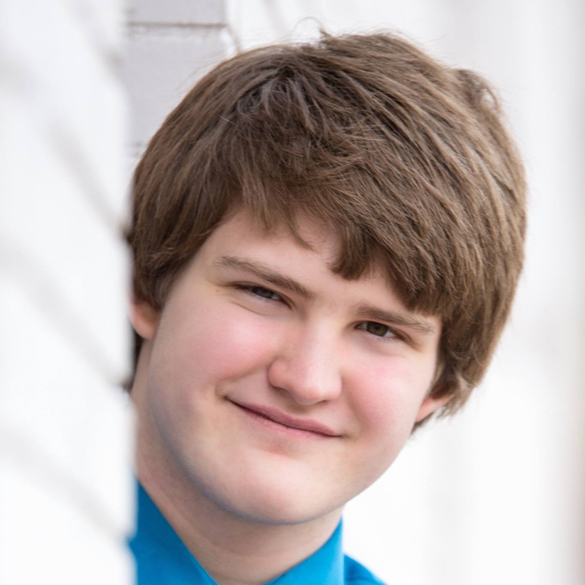

GRANT CAREY
Grant Carey is an actor, author, and game designer born and raised in Washington, Illinois. On September 26, 2010, his tenth birthday, his father certified him as a SCUBA diver. Many years later, on June 29th, 2018, he performed a solo of Peter, Paul and Mary's version of "Don't Laugh at Me" at an international convention in Las Vegas, Nevada. Shortly after his performance in Las Vegas, Grant self-published his first book, The Quest for Evil. Grant Carey then went on to graduate from Washington Community High School in 2019, soon enrolling in the Creative Technologies major at Illinois State University.